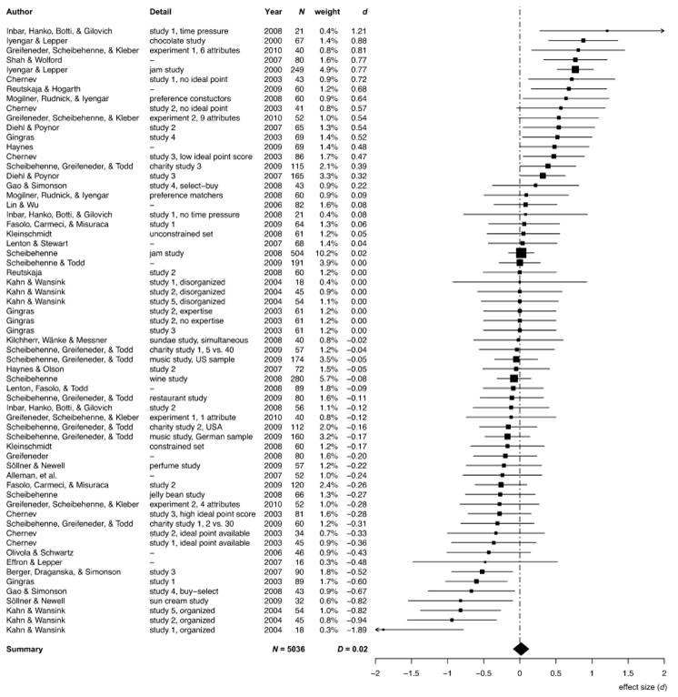

Last month a new meta-analysis of ‘nudges’ by Stephanie Mertens and friends was published, with a headline finding that:
choice architecture interventions overall promote behavior change with a small to medium effect size of Cohen’s d = 0.45 (95% CI [0.39, 0.52]).
The criticism came fast. Andrew Gelman jumped in to “broadcast the problems with this article right away”. He wrote:
Wha . . .? An effect size of 0.45 is not “small to medium”; it’s huge. Huge as in implausible that these little interventions would shift people, on average, by half a standard deviation. I mean, sure, if the data really show this, then it would be notable — it would be big news—because it’s a huge effect.
I agree with the tenor of this statement, but want to note that some of these interventions are not “little”. I believe some do have “huge” effect sizes, but they’re typically results that are so unsurprising that I’m surprised they made the benchmark for publication.
Some of the food choice studies in the meta-analysis are like this. The field is tarred by a bunch of Brian Wansink studies that should have been excluded from the meta-analysis, but let me briefly come to the defence of some of the others.
One of the meta-analysis studies with the largest effect size is a study by Diliberti and friends. They served restaurant customers two sizes of entrée. One entrée was 50% larger than the other. Those served the bigger entrée ate 43% more entrée than those served the smaller one. Most people just ate whatever size entrée they were served. The larger entrée also translated into an increase of calories across the whole meal by 25%. I find this unsurprising (this is no Brian Wansink magic bowl of soup) and a reasonable effect size (although it also wouldn’t surprise me if it were smaller in a larger replication). There are several other studies in the meta-analysis of this nature.
Diliberti and friends, of course, don’t just stop with the meal. They go on to claim that “These results support the suggestion that large restaurant portions may be contributing to the obesity epidemic.” That’s a stretch - the effect size on obesity may well be zero - but this claim doesn’t undermine the reported effect sizes for the far less ambitious measure of calorie consumption during a meal. This is one of the common features of interventions with large and realistic effect sizes: the measure is close to the intervention. Unfortunately, these are often not the outcomes that someone interested in, say, the policy implications would care about.
Despite my brief defence of some of the reported effect sizes, I agree with Andrew Gelman that, on net, there are too many studies in the meta-analysis that likely have overestimated effect sizes. As he writes:
I’m concerned about selection bias within each of the other 200 or so papers cited in that meta-analysis. This is a literature with selection bias to publish “statistically significant” results, and it’s a literature full of noisy studies. If you have a big standard error and you’re publishing comparisons you find that are statistically significant, then by necessity you’ll be estimating large effects. This point is well known in the science reform literature (for example see the example on pages 17-18 here).
Do a meta-analysis of 200 studies, many of which are subject to this sort of selection bias, and you’ll end up with a wildly biased and overconfident effect size estimate. It’s just what happens! Garbage in, garbage out.
The headline finding of the meta-analysis also raises an interesting question: is it sensible to report an aggregate effect size involving any study that sits under the banner of “choice architecture” or a “nudge”?
Take the following two examples as points on a spectrum.
First, consider Eric Johnson and Dan Goldstein’s famous (and typically misinterpreted) study into organ donation defaults (pdf). The lab experiment in that paper is used in the meta-analysis (I think an over-estimated effect size), but let’s consider the more famous intervention discussed in that paper.
In many European countries, people are presumed to consent to organ donation. They are never asked. Depending on the country, they typically need to do something like find and fill out a form to change that presumption. This gives us 99.98% of Austrians who are presumed to consent, versus the 12% who register as organ donors in Germany. Huge effect size via a very rigid mechanism. (Note also here that the outcome measure is registration for organ donation, not organ donation itself. Go downstream and the effect size rapidly dwindles.)
Now, let’s pick another study in the meta-analysis relating to organ donation, one by Sallis and friends on the use of persuasive messages on organ donation registrations (the link points to the published study, but the numbers in the meta-analysis were pulled from an earlier preliminary report). When registering for their driver’s licence, applicants were shown either a control message or one of a series of “theoretically informed persuasive messages”. The best message substantially outperformed the control, getting about 30% more people to sign up. But that difference was less than 0.1% of people who saw the message. The Cohen’s d: 0.05.
What is the unifying element between a default “presumed consent” and a web pop-up asking someone to register? It’s only this label of “nudge”. I’m not convinced that averaging the two tells us anything.
But this brings us to another ambition of the authors:
Previous studies have mostly been restricted to the analysis of a single choice architecture technique or a specific behavioral domain, leaving important questions unanswered, including how effective choice architecture interventions overall are in changing behavior and whether there are systematic differences across choice architecture techniques and behavioral domains that so far may have remained undetected and that may offer new insights into the psychological mechanisms that drive choice architecture interventions.
I like this ambition to compare across domains and techniques, but am unconvinced the field is ready for a quantitative answer of the fashion proposed. There is too much garbage. Some fields are a mess. Comparing the studies is interesting - I’ve already learnt a lot from the paper and associated data - but to declare certain fields having larger effect sizes is premature.
Also, relating to one of my points above, the choice of outcome also makes a substantial difference. If you’re aiming to change calorie consumption in a meal, you could obtain a big effect. If you’re aiming to reduce obesity, not so much. If you’re looking to increase numbers “consenting” to organ donation, potentially big effect. Trying to change organ donation itself, much harder. Are defaults highly effective in organ donation if they increase the number registered? Or are they weak if they hardly change the number of actual donations?
What would I have done myself? No idea. But on reflection, I wonder whether a less formal qualitative approach would have been more enlightening. Sure, calculate some of the numbers, but don’t take them too seriously. Pull apart why some are larger than others. Try to understand how study quality and choice of outcome variable might affect reported effects. This meta-analysis provides a useful starting point for that analysis.
Outside of this question of what the meta-analysis covers, there are a couple of other points worth noting.
As hinted above, the meta-analysis included some studies by Brian Wansink. It also included the the “sign at the top” honesty experiments that had previously been subject to failed replications, with the paper later retracted for fraud. (Why didn’t the replications make the meta-analysis?) There is a discussion about the inclusion of the retracted paper in the meta-analysis in Retraction Watch. (And note the positive, constructive engagement by one of the meta-analysis authors.)
I feel for the authors here. How do you set clear guidelines in your pre-analysis plan that enable you to say: “we’re not trusting anything by this guy, whether the particular study is retracted or not”. I think this comes back to my question above about whether you have to be a bit more flexible or qualitative at this point in time.
The authors are also far from Robinson Crusoe in having a meta-analysis contaminated by Brian Wansink studies. One meta-analysis on choice overload that I have referred to many times found an average effect of zero. But look at the plot of the effect sizes and the huge effects that increasing range of choice had in some some studies. And then look at the authors of the three outliers at the bottom….This choice overload meta-analysis suffers the same problems as the paper the subject of this post.

Another point worth noting is that the meta-analysis authors considered the possibility of publication bias.
Assuming a moderate one-tailed publication bias in the literature attenuated the overall effect size of choice architecture interventions by 26.79% from Cohen’s d = 0.42, 95% CI [0.37, 0.46], and τ2=0.20 (SE=0.02) to d=0.31 and τ2=0.23. Assuming a severe one-tailed publication bias attenuated the overall effect size even further to d=0.03 and τ2=0.34; however, this assumption was only partially supported by the funnel plot.
Assuming the worst, the aggregate effect is pretty small.
To close with a random story, one of my previous employers announced that they were giving all employees a $300 bonus. But, they weren’t going to just pay it to us. We had to claim it against an expense we had incurred. It could be any expense - our grocery shopping, a celebratory dinner, new shoes, whatever - but you had to go through the painful expense system to claim it. The tight-arse partners were hoping they’d get the goodwill of giving the bonus but save save money if not everyone claims (although given who they were, they might also have been thinking about tax advantages…). A lot of people didn’t claim - from memory around 30% missed out.
Anyhow, we ran an internal campaign of “behaviourally informed” emails to get more people to claim the bonus. The reminders worked (about a 5 percentage point bump) but none of the different messages distinguished from each other. That’s pretty typical of this type of study - the obvious part works (people tend to benefit from reminders), the more sexy part doesn’t (yet another failure for loss framing). But just think if instead of text messages we had simply changed the default to automatic payment of $300. Simple “nudge”. Huge effect.